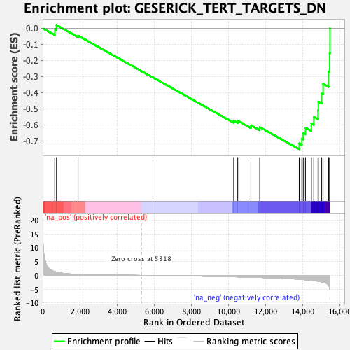
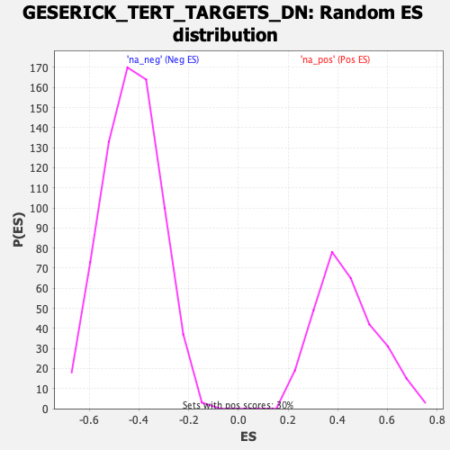

| | | Dataset | DE_genes |
| Phenotype | NoPhenotypeAvailable |
| Upregulated in class | na_neg |
| GeneSet | GESERICK_TERT_TARGETS_DN |
| Enrichment Score (ES) | -0.7519695 |
| Normalized Enrichment Score (NES) | -1.748839 |
| Nominal p-value | 0.0 |
| FDR q-value | 0.025662927 |
| FWER p-Value | 0.236 |
Table: GSEA Results Summary

Fig 1: Enrichment plot: GESERICK_TERT_TARGETS_DN
Profile of the Running ES Score & Positions of GeneSet Members on the Rank Ordered List
| PROBE | GENE SYMBOL | GENE_TITLE | RANK IN GENE LIST | RANK METRIC SCORE | RUNNING ES | CORE ENRICHMENT | | 1 | SIAH2 | | | 652 | 1.370 | -0.0060 | No |
| 2 | NFIL3 | | | 745 | 1.204 | 0.0199 | No |
| 3 | NFKBIZ | | | 1907 | 0.353 | -0.0459 | No |
| 4 | ZFP36 | | | 5936 | -0.035 | -0.3057 | No |
| 5 | HEY1 | | | 10286 | -0.489 | -0.5742 | No |
| 6 | ELN | | | 10503 | -0.520 | -0.5744 | No |
| 7 | DUSP6 | | | 11211 | -0.638 | -0.6033 | No |
| 8 | HBEGF | | | 11688 | -0.740 | -0.6146 | No |
| 9 | KLF9 | | | 13812 | -1.385 | -0.7153 | Yes |
| 10 | BHLHE40 | | | 13955 | -1.446 | -0.6863 | Yes |
| 11 | JUNB | | | 14030 | -1.485 | -0.6518 | Yes |
| 12 | KLF4 | | | 14148 | -1.566 | -0.6179 | Yes |
| 13 | BTG2 | | | 14468 | -1.766 | -0.5919 | Yes |
| 14 | EGR2 | | | 14597 | -1.869 | -0.5508 | Yes |
| 15 | IER3 | | | 14825 | -2.088 | -0.5102 | Yes |
| 16 | KLF10 | | | 14843 | -2.100 | -0.4558 | Yes |
| 17 | GADD45B | | | 15024 | -2.338 | -0.4056 | Yes |
| 18 | GADD45G | | | 15098 | -2.468 | -0.3451 | Yes |
| 19 | NR4A1 | | | 15395 | -3.552 | -0.2703 | Yes |
| 20 | ERRFI1 | | | 15449 | -4.472 | -0.1555 | Yes |
| 21 | FOSB | | | 15469 | -5.930 | 0.0001 | Yes |
Table: GSEA details [plain text format]

Fig 2: GESERICK_TERT_TARGETS_DN: Random ES distribution
Gene set null distribution of ES for GESERICK_TERT_TARGETS_DN